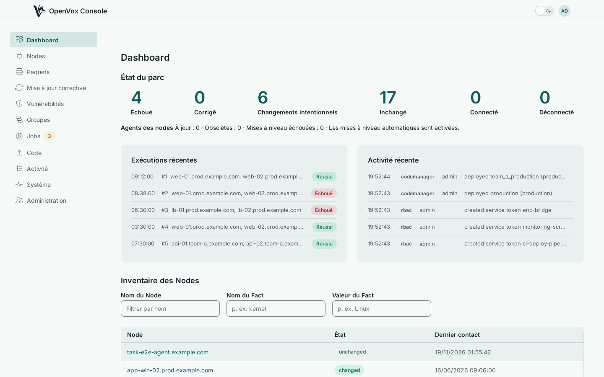

Voyez chaque Node, décidez de ce qui tourne et où, déployez votre code, appliquez des correctifs, lancez des Tasks et des Plans, et agissez sur ce qui revient. Une console Puppet Enterprise pour OpenVox — un binaire Go, au-dessus des openvox-server et openvoxdb que vous faites déjà tourner.


Pourquoi les équipes la choisissent
Chaque image ci-dessous montre la console elle-même, capturée sur une instance en fonctionnement.

Chaque paquet remonté par chaque Node, confronté aux vulnérabilités connues d'OSV — ou de votre propre miroir, pour les sites sans accès à l'extérieur — et de Tenable, le tout fusionné en une seule liste. Voyez d'abord ce que l'application des correctifs réglerait. Un Node que personne n'a pu évaluer est affiché exactement comme tel, jamais comme sain.

Authentification unique via OpenID Connect, avec les groupes de votre fournisseur mappés sur les rôles de la console à chaque connexion. Les rôles sont de simples ensembles de permissions : chacun voit exactement ce dont sa fonction a besoin. L'automatisation reçoit ses propres jetons de service, et chaque changement est consigné.

Commencez avec une seule instance. Quand le parc grandit, faites tourner la même image en instances web, worker et orchestrator distinctes, en cluster avec TLS mutuel, et placez la classification juste à côté de vos compilateurs. Tout ce qui est durable réside dans Postgres : les instances vont et viennent derrière un répartiteur de charge, et une seule page les montre toutes.

Exécutez Puppet sur un Node, une sélection ou tous les Nodes sélectionnés par un groupe, sans attendre la prochaine exécution planifiée. Le résultat de chaque Node revient séparément — statut, sortie et lien vers le Report produit — et un Node hors ligne le signale immédiatement.

Déployez depuis un dépôt de contrôle ou un par équipe, à la demande ou à chaque push. Puis voyez, pour chaque dépôt, combien de Nodes sont assignés à ses Environments face à combien s'exécutent réellement à partir d'eux — l'écart qui révèle qu'un déploiement n'a pas abouti, ou que des Nodes exécutent du code vers lequel rien ne les dirige.
Et tout le reste d'une console
Construit sur la pile que vous utilisez déjà
openvox-server compile toujours les catalogues et gère la CA ; openvoxdb stocke toujours les Facts et les Reports. Vos agents continuent de parler exactement à ce à quoi ils parlent aujourd'hui — la console sert le contrat ENC standard, il n'y a donc rien à changer côté Node.
docker compose up démarre openvoxserver, openvoxdb, Postgres et la console ensemble : vous pointez un agent de test dessus et voyez apparaître vos propres Nodes avant de vous engager.
OpenVox Console est distribué sous forme d'images de conteneur, construites pour amd64 et arm64 à chaque push, et d'un binaire unique. Les guides d'installation vous mènent d'un hôte vide à un déploiement fonctionnel - openvoxserver, openvoxdb, Postgres et la console - avec des conteneurs ou avec des paquets.